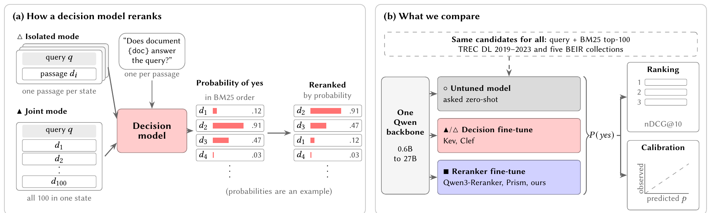
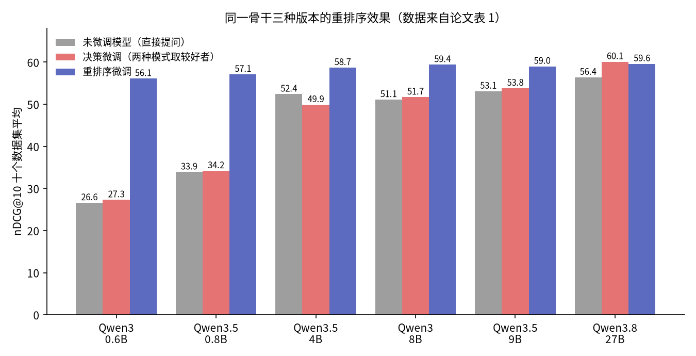

目录 · 8 节
1它到底在解决什么问题？2核心设计：两种喂法、两类问题3具体怎么测：排序、校准和两个用法4实验结果一：决策微调不会让重排序更好5实验结果二：校准优势取决于一句话6我认为它的局限7一个检索团队可以怎么试8结论与评价我的判断：正在考虑用最近流行的“System One 模型”（也叫决策模型）当重排序器的团队，应该先读这篇再决定。它的结论很直接：要重排序，就微调一个重排序模型。在同一个 Qwen 骨干上，从 0.6B 到 9B，专门的重排序微调比决策微调的 nDCG@10（前 10 名排序质量，满分 100）高 5 到 29 分；到 27B 两者打平（59.6 对 60.1）。决策模型主打的“概率校准”也很脆弱：提问措辞稍微一换，校准误差就会翻两三倍。
它到底在解决什么问题？
先说什么是决策模型。普通大模型回答问题时输出一段文字；决策模型只输出一个概率，比如问“这篇文档回答了这个查询吗？”，它直接给出“是”的概率 0.91。名字来自心理学里“系统 1”的说法，指快速、直觉式的判断。2026 年 9 月第一个这类模型 Jev 发布后，几周内就有人报告它是不错的重排序器，还被接进了一些检索系统。
重排序的流程很简单：先用 BM25（经典关键词检索）召回前 100 条候选，再对每条候选问一次“它回答了查询吗”，按“是”的概率从高到低重排。
问题在于，已有的报告都是拿 Jev 和建立在其他、通常更小模型上的重排序器比较。这样分不清效果来自“决策微调”这种训练方式，还是来自底层大模型本身。作者想做一个干净的对照：同一个骨干模型，比较三种版本。
| 版本 | 是什么 | 例子 |
|---|---|---|
| 未微调模型 | 发布的对话模型，直接用同一个问题提问，取第一个回答词是“是”的概率 | Qwen3-8B |
| 决策微调 | 在同一骨干上训练成决策模型 | Kev、Clef |
| 重排序微调 | 在同一骨干上用相关性标注训练成重排序器 | Qwen3-Reranker、Prism、作者自己训的 |
三种版本都输出“是”的概率，所以既能拿来排序，也能当绝对概率读。

核心设计：两种喂法、两类问题
第一，两种喂法。单条模式下，模型每次只看查询和一条候选，和传统的 cross-encoder（把查询和文档拼在一起打分的模型）一样；整组模式下，模型一次看查询和全部 100 条候选，再对每条分别提问，所以某条候选的概率会受其他候选影响。
第二，两个研究问题。第一个问排序：决策模型排得比未微调模型、比重排序微调更好吗？第二个问校准：它给出的概率是否更可信，可信又有什么用？
为什么要单独测校准？因为排序只看分数的相对顺序。举例（示意）：两个模型给三条候选打分，一个打 0.9、0.5、0.1，另一个打 0.99、0.98、0.97，排序完全一样，但后者的数字几乎没法当概率用。校准只在需要读绝对值时才重要，比如“概率超过 0.5 的才交给大模型”，或者“估计一共有几条相关文档”。
具体怎么测：排序、校准和两个用法
排序用 nDCG@10，在 TREC DL 2019 到 2023 五个评测集和五个 BEIR 公开数据集上算，共十个数据集。其中 TREC-COVID、Touché、DBPedia 三个数据集没有出现在任何一个微调模型的训练数据里，作者把它们单独算一个“零样本”平均。
校准用 ECE（期望校准误差）。做法是把所有预测概率按 0 到 1 分成 15 个等宽区间，每个区间里比较“平均预测概率”和“实际相关的比例”，差值按样本数加权平均。手算例子（示意）：只有两个区间，一个区间里 100 条预测平均是 0.9、实际 70 条相关，差 0.2；另一个区间 100 条预测平均 0.1、实际 10 条相关，差 0；ECE 就是 (0.2×100+0×100)÷200=0.1。越小越好。
两个用法也很实际：
- 固定阈值：保留概率不低于 0.5 的候选，看这个集合的 F1（同时考虑查得准和查得全的分数）。作者还算了“遗憾值”，也就是事后为每个数据集挑最好的阈值，F1 能比 0.5 多出多少。
- 计数：把一个查询下所有候选的概率加起来，当作“相关文档有几条”的估计，看和真实条数平均差多少条。如果概率是校准的，这个和应该接近真实数量。手算例子（示意）：4 条候选概率是 0.9、0.6、0.4、0.1，加起来是 2.0，估计有 2 条相关；如果实际有 3 条，误差是 1 条。作为参照，永远猜“该数据集相关条数的中位数”平均差 8.6 条。
实验结果一：决策微调不会让重排序更好

从 0.6B 到 9B，每个骨干上都是重排序微调最好，领先决策微调的较好模式 5.2 分（9B：59.0 对 53.8）到 28.8 分（0.6B：56.1 对 27.3）。这说明差距不是个别数据集的偶然：在 60 组“重排序微调 × 数据集”里，48 组差异显著，决策微调没有一次显著领先。
有人会怀疑这是因为重排序模型在 MS MARCO（微软的段落检索训练集）上训练过、占了领域优势。但在零样本的三个数据集上，差距仍有 5.4 到 23.9 分。作者自己用公开、朴素的配方只在 MS MARCO 上训了一个 9B 重排序器，平均 59.4，和 Prism-9B 的 59.0 相当，这说明优势不靠什么秘方。
更扎心的是：到 9B 为止，决策微调相对未微调模型只变化 −2.5 到 +0.7 分。这意味着，直接拿发布的 Qwen3.5-4B 问一句“这篇文档回答查询了吗”，排序效果就和在它上面做的决策微调一样，还不用训练。
27B 是例外。Kev-27B 平均 60.1，作者在同一起点上训的重排序器是 59.6，只在 DBPedia 一个数据集上有显著差异（作者的更好）。另一个 27B 决策模型 Clef 只有 54.8，没比未微调模型（56.4）好。
整组模式只对最大的模型有用：Kev-27B 从 59.0 升到 60.1，但 Kev-0.6B 掉了 12.2 分、Kev-8B 掉了 13.0 分。作者给的可能原因是长度：100 条候选拼在一起，在 TREC DL 上约 1.3 万个 token，在 BEIR 上 4 万以上，而小号 Kev 的模型卡写明训练时输入最长约 7552 个 token。
实验结果二：校准优势取决于一句话
用作者的问法（“这篇文档回答了查询吗？”），4B 以上的决策模型确实比公开的重排序器校准得好，比如 Kev-8B 的 ECE 是 0.113，Qwen3-Reranker-8B 是 0.257；Jev 是 0.075，Kev-27B 是 0.076，全场最好。
但换成早先一篇评测用的宽松问法（“这篇文档和查询相关吗？相关指回答了查询，或包含直接针对它的信息”），排序几乎不动，校准却大幅变差，很多模型误差翻两三倍：Jev 整组模式从 0.075 变成 0.224。这时决策模型最多只和同骨干最好的重排序器持平。所以我认为，“开箱即校准”是相对某个相关性定义而言的，使用者得自己把这个定义写成提问。
校准也补不了排序的差距。9B 以下，用 0.5 当阈值时，重排序器保留下来的集合都更好，比如 Prism-4B 的 F1 是 51.0，Kev-4B 是 42.6；而决策模型的 0.5 已经接近最佳阈值，遗憾值只有 0.9 到 3.1。只有两者排序一样好时校准才起作用：27B 上 Kev-27B 的 F1 是 57.2，作者的重排序器因为偏保守，每个查询只留 7.9 条，F1 只有 48.3。
我认为它的局限
- 比较的是已发布的模型。同一骨干的不同微调版本，训练数据和目标都不一样；Jev 背后的训练方法没有公开，以后做得更好的决策微调可能改变结论。
- 严格控制的对照只靠作者自己训的 9B 和 27B 两个重排序器，各训一次、不调超参数。校准只在 TREC DL 上测，问法也只试了两种。
- 所有候选都来自 BM25 前 100 条。实际系统常用向量召回，候选更难区分，结论是否成立还要再验证；而且决策模型都才发布一个月左右，新版本可能不同。
一个检索团队可以怎么试
- 先建对照：在自己的数据上，取同一个骨干的未微调版本、决策模型、重排序模型，各跑一遍前 100 条重排，比 nDCG@10。
- 如果需要阈值或计数，单独测校准：在有完整标注的查询上算 ECE，并至少试两种问法，看校准随措辞变化多大。
- 需要绝对概率时，优先考虑在重排序训练里加一项“是/否”分类损失，作者的 9B 重排序器就靠这一项做到和 Clef-Flash 一样的校准（0.111 对 0.112）。
- 整组模式先只在大模型上试，并控制拼接后的长度不超过模型训练过的长度。
结论与评价
这是一篇“泼冷水”但做得很扎实的对照研究：同一骨干、同样候选、显著性检验、零样本子集、公开的对照配方，一层层排除了其他解释。对检索团队，最有用的结论是，要好的排序就训练重排序器；要可信的概率，问法和训练标签比“是不是决策模型”更关键。
| 维度 | 评价 |
|---|---|
| 问题重要性 | 高。决策模型正被快速接进检索系统，需要有人做干净的对照 |
| 方法创新性 | 中。没有新方法，价值在实验设计和计数这类校准用法 |
| 实验证据 | 高。六个骨干、十个数据集、显著性检验，原始输出全部公开 |
| 工程成本 | 低。复现只需要跑现成模型，作者的重排序配方很朴素 |
| 是否值得尝试 | 值得用它的对照方法检查自己的选型；不建议只为排序引入决策模型 |
讨论
欢迎补充实验细节、复现经验或不同看法。需 GitHub 登录。
正在加载讨论…